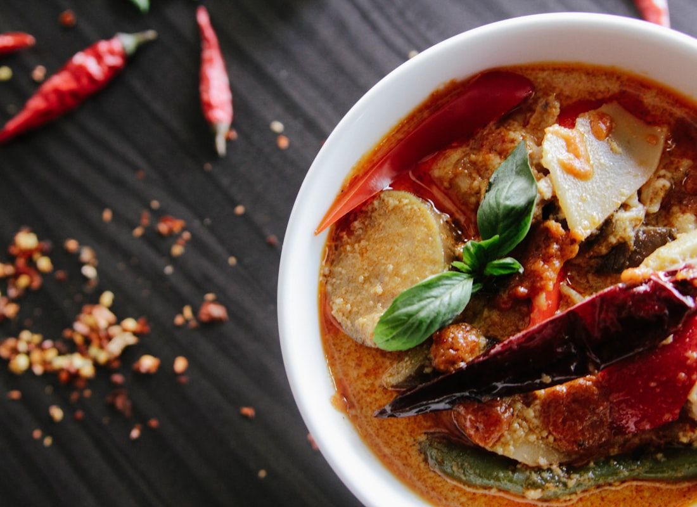
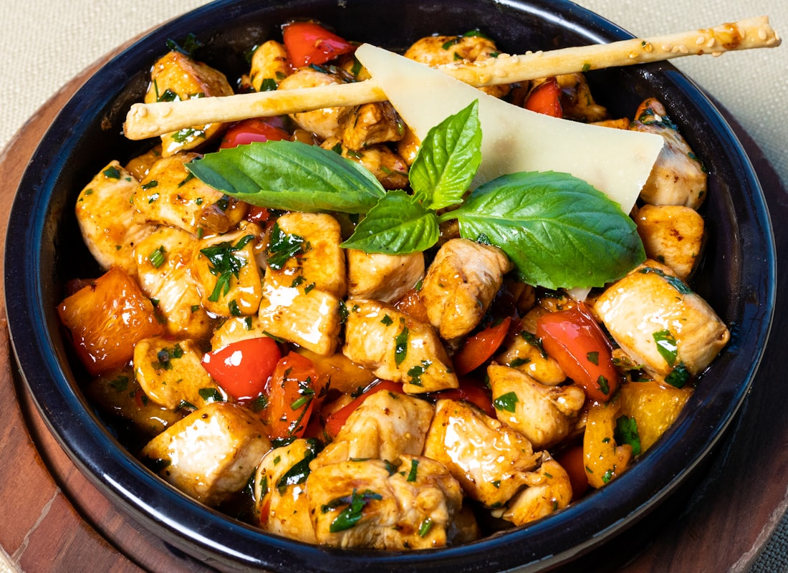
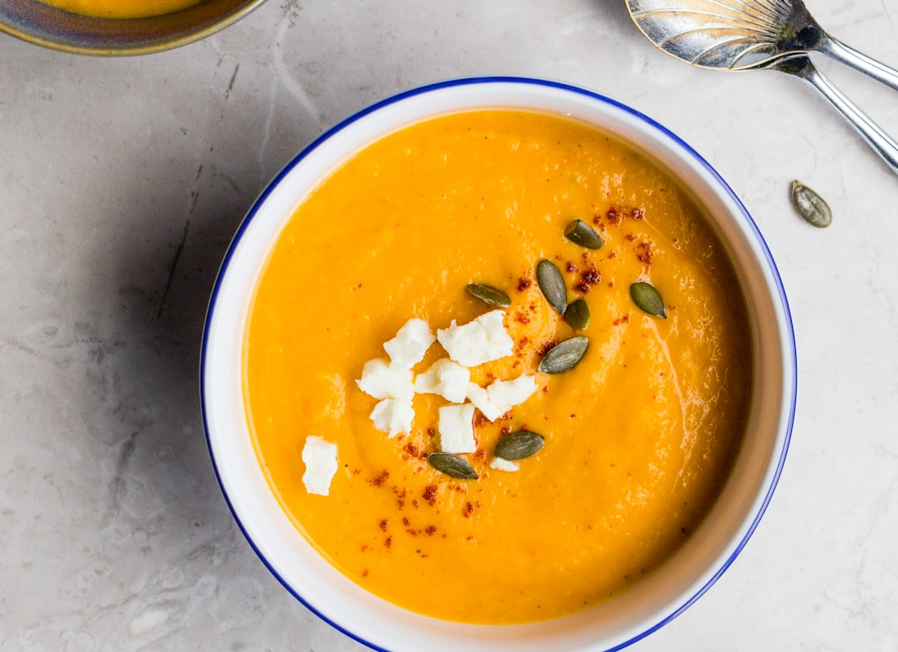
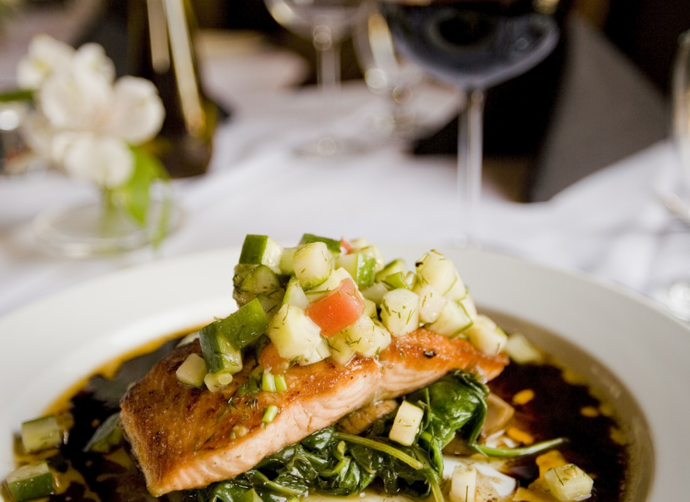
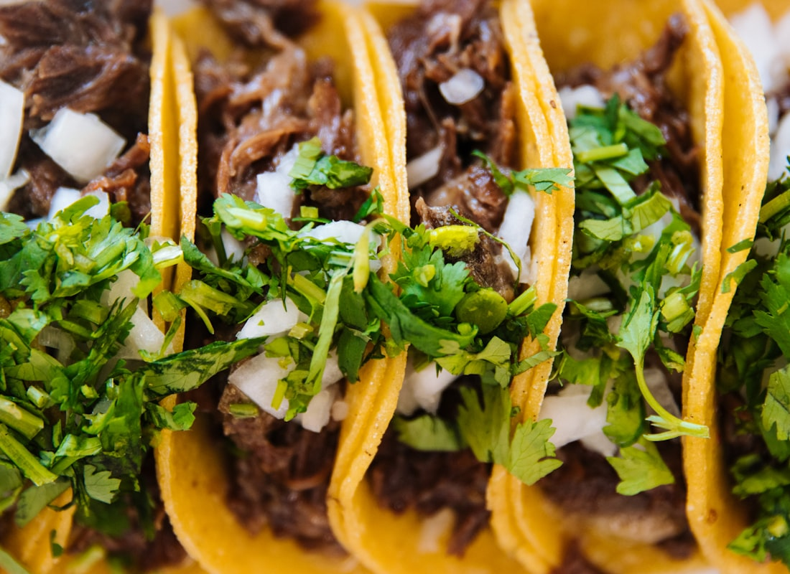
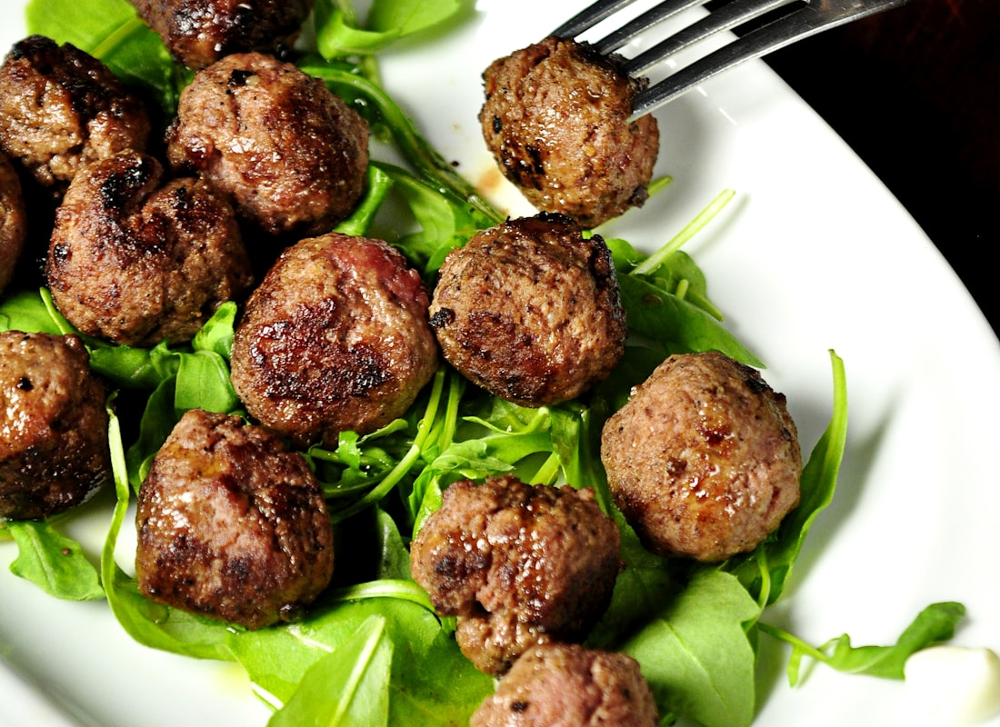

2 people · Mon–Fri
Heart-smart week
Seven savory dishes. Eggs for breakfast. Rice and sweet potato. No oat jars, no quinoa. Tap a card for photos, ingredients, and steps.
Tonight
Cook these 3 in parallel
Egg bake, lemon chicken barley, fajitas. ~75 minutes. Full timeline, quantities, and checkboxes.
Egg, sweet potato & veg bake
15 min prep · 30 min oven · 6 squares

Lean turkey + bean chili
15 min hands-on · 35 min simmer · 8 bowls

Lemon chicken, barley & roasted veg
20 min prep · 35 min oven / barley · 4 bowls

Lean beef + sweet potato stew
20 min prep · 50–60 min simmer · 4 bowls

Sheet-pan salmon, rice & broccoli
30 minutes · 4

Chicken fajita bowls
25 minutes · 6 bowls

Turkey meatballs, tomato sauce, green beans, rice
35 minutes · 4 plates
This week’s plate
| Breakfast | Lunch | Dinner | |
|---|---|---|---|
| Mon | Egg bake | Fajitas | Salmon |
| Tue | Egg bake | Fajitas | Salmon |
| Wed | Egg bake | Chili | Chicken barley |
| Thu | Chili | Meatballs | Stew |
| Fri | Fajita leftover | Stew | Meatballs |
Sunday cook
- Oven 400°F. Start brown rice (4 cups dry) and barley.
- Sheet-pan egg + sweet potato bake.
- One pot chili. Other pot stew.
- Oven: turkey meatballs + green beans. Sauce on the stove.
- Oven: lemon chicken + veg. Pack with barley.
- Skillet: fajita chicken + peppers over rice.
- Cool in shallow containers within 2 hours.
- Salmon Monday night unless you want it Sunday — then eat by Tuesday.
USDA leftovers are 3–4 days. Freeze Thursday/Friday portions Sunday night. Grocery list is already in Todoist → Hermes Groceries.